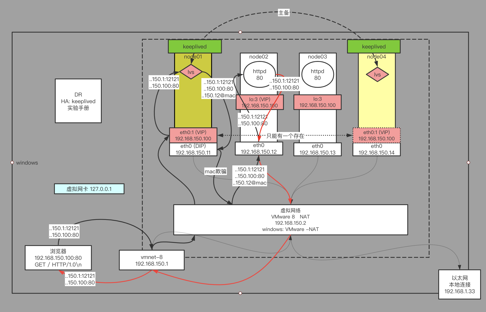

LVS负载均衡
隐藏VIP方法：对外隐藏，对内可见
kernel parameter:
目标mac地址为全F，交换机触发广播
/proc/sys/net/ipv4/conf/*IF*/ --虚拟目录 开机之后才有 见linux→文件系统→/proc
arp_ignore: 定义接收到ARP请求时的响应级别；
0：只要本地配置的有相应地址，就给予响应；
1：仅在请求的目标(MAC)地址配置请求 到达的接口上的时候，才给予响应；
arp_announce：定义将自己地址向外通告时的通告级别；
0：将本地任何接口(网卡)上的任何地址向外通告； --所有网卡所有ip外部都可见
1：试图仅向目标网络通告与其网络匹配的地址；
2：仅向与本地接口上地址匹配的网络进行通告；
1/2网段 1.*/2.*两个ip 1网段只可见1.* 2网段只可见2.*
linux内核模块ipvs=LVS
内核不能直接调用
内核会暴露系统调用(可以理解成c语言封装成API,可以在c语言中调用)
外部交互接口(用户空间程序): yum install ipvsadm -y
人调用API(下发指令) → 翻译成底层c语言API的调用 → 调用内核
程序就是一个传递者
管理集群服务 入 哪些需要被负载
添加：-A -t|u|f service-address [-s scheduler]
-t: TCP协议的集群
-u: UDP协议的集群
service-address: IP:PORT
-f: FWM: 防火墙标记
service-address: Mark Number
[-s scheduler]
四种静态：
rr:轮循
wrr:
dh:
sh:
动态调度方法：
lc: 最少连接 本地通过偷窥(三次握手+1 四次分手-1)
wlc: 加权最少连接
sed: 最短期望延迟
nq: never queue
LBLC: 基于本地的最少连接
DH:
LBLCR: 基于本地的带复制功能的最少连接
修改：-E
删除：-D -t|u|f service-address
例如: ipvsadm -A -t 192.168.9.100:80 -s rr
管理集群服务中的RS 出 --负载到哪
添加：-a -t|u|f service-address -r server-address [-g|i|m] [-w weight]
-t|u|f service-address：事先定义好的某集群服务 -A定义的
-r server-address: 某RS的地址，在NAT模型中，可使用IP：PORT实现端口映射；
[-g|i|m]: LVS类型
-g: DR
-i: TUN
-m: NAT
[-w weight]: 定义服务器权重
修改：-e
删除：-d -t|u|f service-address -r server-address
例如:
# ipvsadm -a -t 172.16.100.1:80 -r 192.168.10.8 –g
# ipvsadm -a -t 172.16.100.1:80 -r 192.168.10.9 -g
查看
-L|l
-n: 数字格式显示主机地址和端口
--stats：统计数据
--rate: 速率
--timeout: 显示tcp、tcpfin和udp的会话超时时长
-:c 显示当前的ipvs连接状况
删除所有集群服务 -C：清空ipvs规则
保存规则 -S
ipvsadm -S > /path/to/somefile
载入此前的规则：-R
ipvsadm -R < /path/form/somefile
搭建
node01(lvs server) 配置vip:
ifconfig eth0:1 192.168.150.100/24
或: ifconfig eth0:1 192.168.150.100 netmask 255.255.255.0
/24 = 11111111 11111111 11111111 00000000 = 255.255.255.0 --24个1
关掉 ifconfig eth0:1 down
node02~node03:
1) 改内核 arp协议
echo 1 > /proc/sys/net/ipv4/conf/eth0/arp_ignore
echo 1 > /proc/sys/net/ipv4/conf/all/arp_ignore
echo 2 > /proc/sys/net/ipv4/conf/eth0/arp_announce
echo 2 > /proc/sys/net/ipv4/conf/all/arp_announce
2) 配置隐藏的vip
ifconfig lo:2 192.168.150.100 netmask 255.255.255.255
注意这里4个255
为了不让目标为192.168.150.*的数据包走lo(虚拟环回网卡,不会走物理网卡,会直接返回应用程序)
node02~node03 RS中的服务：
yum install httpd -y
service httpd start
vi /var/www/html/index.html
html内容: from 192.168.150.1x
node01 LVS服务配置:
yum install ipvsadm
ipvsadm -A -t 192.168.150.100:80 -s rr
ipvsadm -a -t 192.168.150.100:80 -r 192.168.150.12 -g -w 1
ipvsadm -a -t 192.168.150.100:80 -r 192.168.150.13 -g -w 1
ipvsadm -ln
验证：
浏览器访问 192.168.150.100 看到负载 疯狂F5
node01：
netstat -natp 结论看不到socket连接
node02~node03:
netstat -natp 结论看到很多的socket连接
如果看不到socket连接 说明包没过来
node01:
ipvsadm -lnc 查看偷窥记录本
TCP 00:57 FIN_WAIT 192.168.150.1:51587 192.168.150.100:80 192.168.150.12:80
FIN_WAIT： 连接过，偷窥了所有的包
SYN_RECV： 基本上lvs都记录了，证明lvs没事，一定是后边网络层出问题
握手发送 没收到确认包

keeplived高可用
主备 主(单点→主备)从
问题
1 lvs会挂: 业务下线,单点故障
解决问题
单点故障: 一个有问题 那么用一堆 一变多 vip唯一,所以不能实现
2个思路 多点: 主备 主主
结论: 先讨论主备
方向性:
备→主 每隔一段时间去看一下
主→备 主定时发广播
效率性: 权重
2 RS会挂,一部分用户会请求异常,lvs还存有这个RS的负载记录
如何确定RS挂了: 验证应用层的http协议 发请求 判断返回==200
ping是不对的 因为验证的网络层 连握手层(传输控制层)都不到
解决:
ipvs改源码
第三方实现,keepalived,代替人自动运维,解决单点故障,实现HA高可用
1 监控自己的服务
2 master通告自己还活着, backup监听master状态,master挂了,一堆backup推举出一个新master
3 配置vip,添加ipvs,keeplived有配置文件
4 后端server做健康检查
keeplived是一个通用的工具,主要作为HA(高可用)实现
nginx,可以做负载均衡,但有单点故障,也可用keeplived解决
查看帮助文档(第5类): man 5 keeplived.conf 搜virtual_ipaddress...
keepalived实验： node01~node04
node01: --恢复默认
ipvsadm -C
ifconfig eth0:8 down
node02,node03配置使用之前配置
node01,node04:
yum install keepalived ipvsadm -y
cd /etc/keepalived/
cp keepalived.conf keepalived.conf.bak
vi keepalived.conf --配置
globak_def: 全局配置 配置邮件通知
node01:
vrrp_instance VI_1 { // vrrp：虚拟路由冗余协议！
// 思路 主机配置好 备机配置不需要很好, 主机挂了抓紧重启就好了
state MASTER // node04: BACKUP
// 服务器安多个网卡 每一个网卡不同功能
interface eth0
virtual_router_id 51
priority 100 // 权重 node04: 50
advert_int 1
authentication { // 权限认证
auth_type PASS
auth_pass 1111
}
// man 5 keeplived.conf → :/virtual_ipaddress...
virtual_ipaddress { // vip
// ifconfig eht0:3 192.168.150.100/24
// label:标签
192.168.150.100/24 dev eth0 label eth0:3
}
}
// 虚拟服务 可以配置多个
// ipvsadm -A -a
virtual_server 192.168.150.100 80 { // -A 80:httpd 443:https
delay_loop 6
lb_algo rr
lb_kind DR //NAT TUN 模式
nat_mask 255.255.255.0
persistence_timeout 0 // 秒 测试=0 生产=适当值
// 解释 同一个客户端 在短时间内请求了两次 lvs可能负载到两台服务器 这样两台服务器都开辟了资源
// 而lvs服务器会记录并保留 第一次请求负载到哪台服务器 一段时间(此配置)
// 当第二次请求到来时 lvs根据保留再次负载到第一次那台服务器 可节省其他服务器(可能负载到的)资源
protocol TCP
// 真实服务 rip 配多个
real_server 192.168.150.12 80 { // -a -r
weight 1
HTTP_GET { // 健康检查配置 看帮助文档 SSL_GET?
url {
path /
status_code 200
}
//url { // 可以在web项目单独写一个健康检查页面
// path /
// status_code 200
//}
connect_timeout 3
nb_get_retry 3
delay_before_retry 3
}
}
real_server 192.168.150.13 80 { // 只有ip同上一个不一样
weight 1
HTTP_GET {
url {
path /
status_code 200
}
connect_timeout 3
nb_get_retry 3
delay_before_retry 3
}
}
}
// 拷贝到另一台lvs备用服务器
scp ./keepalived.conf root@node04:`pwd`
service keepalived stat
ifconfig
ipvsadm -ln
lvs备机 会先配置内核模块 为了快速切换
演示 主lvs挂掉
node01 ifconcig eth0 down
node04 ifconcig
ipvsadm -lnc
node01 ifconcig eth0 up 抢回主
演示 负载挂掉一个
node03 service httpd stop
刷新页面 192.168.150.100
node01 ipvsadm -ln
node04 ipvsadm -ln
演示 负载修好
node03 service httpd start
刷新页面 192.168.150.100
node01 ipvsadm -ln
node04 ipvsadm -ln
node01 ps -ef | grep keepalived
会有三个进程
1个父进程 说活着 --init.d=1(进程id号)
2个子进程 用来与真实服务器健康检查
java抛线程, linux抛进程
BUG --异常退出
kill -9 父pid -- -9:强制退出 keeplved没注意就干掉了
kill -9 子pid
kill -9 子pid
ifconfig --vip没收回
ipvsadm -ln --内核配置也没收回
主lvs没有自己还活着的进程(父进程)
备lvs收不到主还活着,自己就开启网卡,会出现两个主机配了vip
造成client混乱,一个client的三次握手四次分手会负载到不同的真实服务器
进而造成连接建立不起来,丢包情况
BUG测试环境看不出来的原因
主机arp -a 下一跳的mac地址是写死的,vip只会访问同一台lvs服务器
而在真实的网络环境下, 经过多个路由, 下一跳是不确定的
使用守护进程,但守护进程可能不可靠,也会挂
所以需要一个可靠地技术 zookeeper
主备模型 原主修好了,要不要抢回主角色,取决于成本复杂度,例如数据同步
...